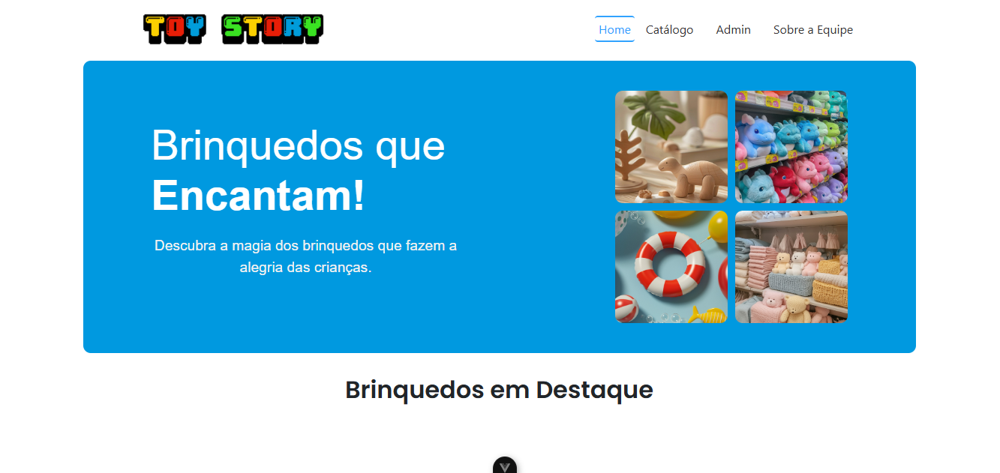
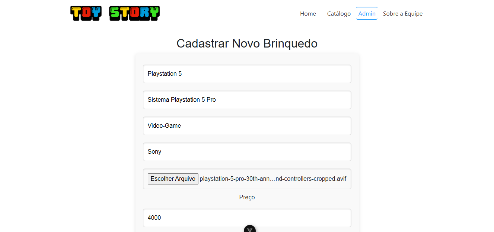

Loja de brinquedos digital
O projeto Toy Story é uma aplicação web desenvolvida com o objetivo de simular o funcionamento de uma loja de brinquedos, permitindo o gerenciamento e a organização de produtos de forma prática e estruturada.
A aplicação é dividida em duas camadas principais: frontend e backend. O frontend foi desenvolvido utilizando Vue.js com Vite, proporcionando uma interface moderna, rápida e responsiva, além do uso da biblioteca SweetAlert2 para exibição de alertas personalizados e melhor interação com o usuário.
O backend foi desenvolvido com Java e Spring Boot, sendo responsável pelo processamento das requisições, implementação das regras de negócio e integração com o banco de dados. A persistência dos dados é realizada utilizando JPA/Hibernate, garantindo uma comunicação eficiente com o banco MySQL.
O sistema permite operações como cadastro, consulta, atualização e remoção de dados, estruturando uma base sólida para o gerenciamento das informações da aplicação.
Tecnologias utilizadas: Vue.js, Vite, JavaScript, SweetAlert2, Java, Spring Boot, Spring Data JPA, Hibernate e MySQL.
Acesse o código do projeto no GitHub:
Fui responsável pela criação e configuração do banco de dados do projeto, estruturando as tabelas e definindo os relacionamentos necessários para o funcionamento do sistema.
Também realizei a integração do banco de dados com o backend, utilizando MySQL e ferramentas de persistência para garantir o armazenamento e a manipulação correta das informações.
Além disso, participei da modelagem dos dados, pensando na organização, consistência e eficiência das operações realizadas pela aplicação.

